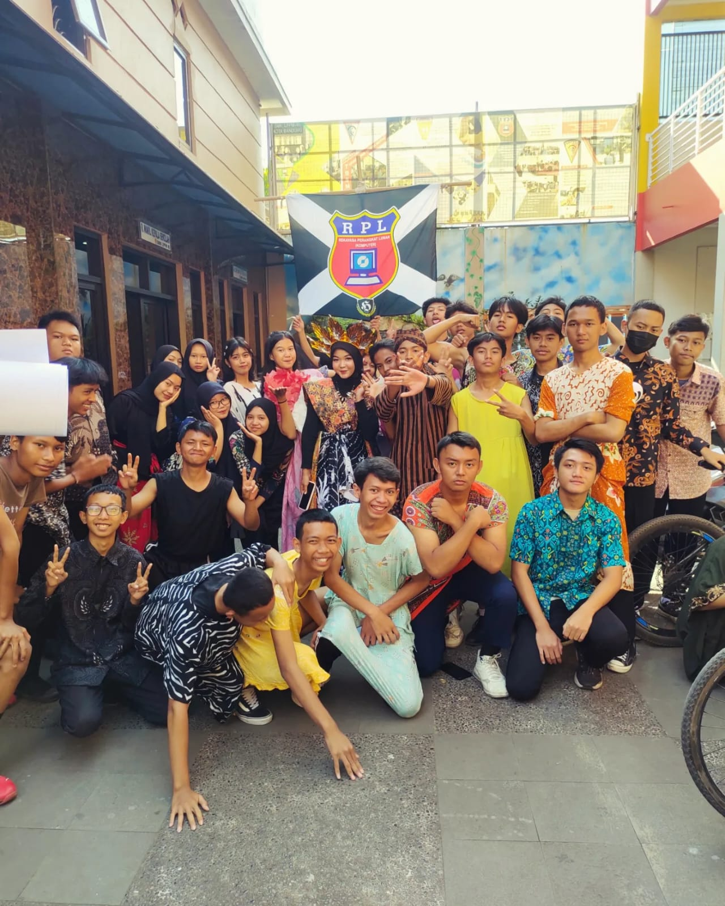
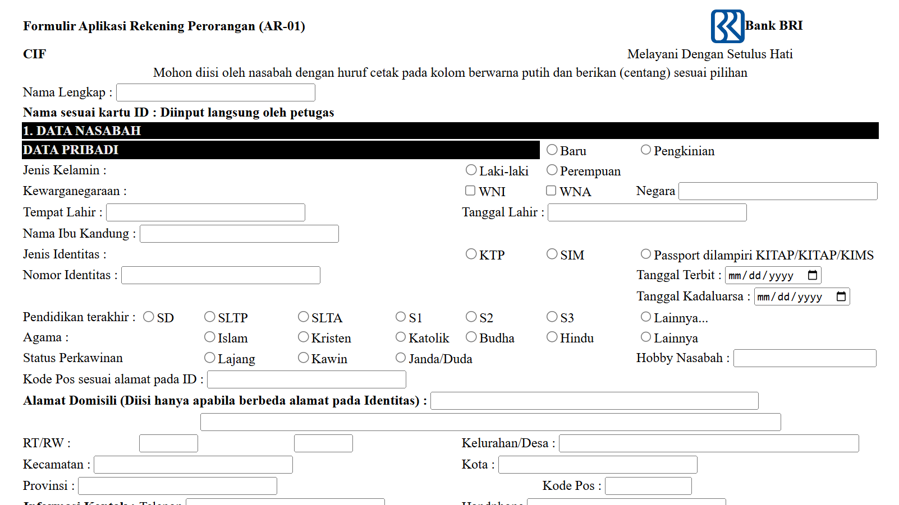
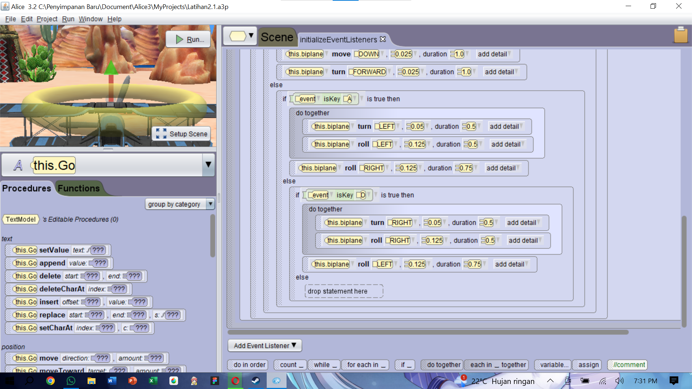

Blog pribadi saya, tempat saya memamerkan apa yang saya bisa dan sudah saya buat. Tujuan utama website ini dibuat untuk memenuhi tugas project dari Bapak Dimas.
Hai saya Adi Hendrawan dari Jurusan Rekayasa Pemrograman, saya sekolah di SMK LPPM RI 1&2 Kota Bandung. Kenapa saya masuk jurusan Rekayasa Pemrograman? Karena saya merasa Pemrograman ada kaitan dengan minat saya terhadap multimedia. Sekalian saya belajar Pemrograman saya bisa juga mengembangkan minat saya terhadap multimedia. Selain itu, masa depan dari jurusan yang berkaitan dengan IT sangat menjanjikan melihat betapa pesatnya perkembangan komputer, dan Teknologi lainnya yang berkaitan dengan IT dan Pemrograman.
Yang saya pelajari dari jusuran Pemrograman diantaranya adalah HTML Tabel, membuat Formulir pembuatan rekening bank BRI.
Lihat Lampiran → Saya juga belajar membuat game sederhana dengan menggunakan software Alice 3.
